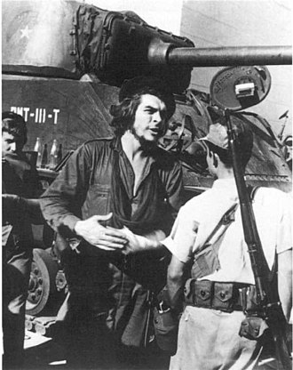

Ernesto "Che" Guevara (Spanish: 14 June 1928[1] 9 October 1967) was an
Argentine Marxist revolutionary, physician, author, guerrilla leader, diplomat,
and military theorist. A major figure of the Cuban Revolution, his stylized
visage has become a ubiquitous countercultural symbol of rebellion and global
insignia in popular culture.
As a young medical student, Guevara traveled throughout South America
and was radicalized by the poverty, hunger, and disease he witnessed.
His burgeoning desire to help overturn what he saw as the capitalist
exploitation of Latin America by the United States prompted his involvement
in Guatemala's social reforms under President Jacobo Árbenz, whose eventual
CIA-assisted overthrow at the behest of the United Fruit Company solidified
Guevara's political ideology.
Later in Mexico City, Guevara met Raúl and
Fidel Castro, joined their 26th of July Movement, and sailed to Cuba aboard
the yacht Granma with the intention of overthrowing US-backed dictator Fulgencio
Batista. Guevara soon rose to prominence among the insurgents, was promoted
to second-in-command, and played a pivotal role
in the two-year guerrilla campaign that deposed the Batista regime.
After the Cuban Revolution, Guevara played key roles in the new
government. These included reviewing the appeals and firing squads
for those convicted as war criminals during the revolutionary
tribunals,[9] instituting agrarian land reform as minister of
industries, helping spearhead a successful nationwide literacy
campaign, serving as both president of the National Bank and
instructional director for Cuba's armed forces, and traversing
the globe as a diplomat on behalf of Cuban socialism.
Such positions also allowed him to play a central role
in training the militia forces who repelled the Bay
of Pigs Invasion, and bringing Soviet nuclear-armed
ballistic missiles to Cuba, which preceded the 1962
Cuban Missile Crisis. Additionally, Guevara was
a prolific writer and diarist, composing a seminal
guerrilla warfare manual, along with a best-selling
memoir about his youthful continental motorcycle journey.
His experiences and studying of MarxismLeninism led
him to posit that the Third World's underdevelopment
and dependence was an intrinsic result of
imperialism, neocolonialism, and monopoly
capitalism, with the only remedies
being proletarian internationalism and
world revolution. Guevara left Cuba in
1965 to foment continental revolutions
across both Africa and South America,
first unsuccessfully in Congo-Kinshasa
and later in Bolivia, where he was
captured by CIA-assisted Bolivian
forces and summarily executed.
SPEECH OF CHE GUEVARA IN UK
In early 1965, Guevara went to Africa to offer his knowledge
and experience as a guerrilla to the ongoing conflict in the
Congo. According to Algerian President Ahmed Ben Bella,
Guevara thought that Africa was imperialism's weak link
and so had enormous revolutionary potential.
Egyptian President Gamal Abdel Nasser, who had
fraternal relations with Che since his 1959
visit, saw Guevara's plan to fight in Congo as
"unwise" and warned that he would become a "Tarzan"
figure, doomed to failure.[219] Despite the warning,
Guevara traveled to Congo using the alias Ramón
Benítez. He led the Cuban operation in support of
the leftist Simba movement, which had emerged
from the ongoing Congo conflict. Guevara, his
second-in-command Víctor Dreke, and 12 other
Cuban expeditionaries arrived in Congo on
24 April 1965, and a contingent of approximately
100 Afro-Cubans joined them soon afterward.
For a time, they collaborated with guerrilla
leader Laurent-Désiré Kabila, who had helped
supporters of the overthrown prime minister
Patrice Lumumba to lead an unsuccessful revolt months
earlier. As an admirer of the late Lumumba,
Guevara declared that his "murder should be a
lesson for all of us". Guevara, with limited
knowledge of Swahili and the local languages,
was assigned a teenage interpreter, Freddy Ilanga.
Over the course of seven months, Ilanga grew to
"admire the hard-working Guevara", who "showed
the same respect to black people as he did to whites".
Guevara soon became disillusioned with the poor
discipline of Kabila's troops and later dismissed
him, stating "nothing leads me to believe he is the
man of the hour".[225] Regardless, Che still
regarded Kabila more favorably than other Simba
leaders, several of whom still pretended to
lead rebel forces even after they had fled into exile.
DEATH

In October 1967 the guerrilla group that Che Guevara was
leading in Bolivia was nearly annihilated by a special
detachment of the Bolivian army aided by CIA advisers.
Wounded, Guevara was captured and then shot dead.
Before he was secretly buried, his hands were cut
off so that his fingerprints could be used to confirm
his identity.
Che Guevara was secretly buried after he was
killed in Bolivia in 1967, but in 1997 a
skeleton that was believed to be his and
the remains of six of his comrades were
disinterred from a mass grave near Vallegrande,
Bolivia, transported to Cuba, and reinterred in
a memorial and monument in Santa Clara.